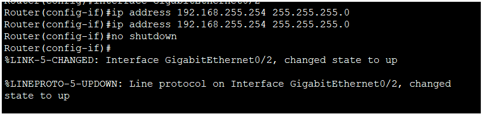

Cisco

Configurer adresse IP sur interface
Il faut tout d'abord utiliser enable puis configure terminal pour entrer en mode de configuration.
Il faut ensuite choisir l'interface pour la quelle on souhaite attribuer une adresse IP.
On active ensuite l'interface en faisant un no shutdown
Router>enable
Router#configure terminal
Router(config)#interface GigabitEthernet0/2
Router(config-if)#ip address 192.168.255.254 255.255.255.0
Router(config-if)#no shutdown
Configurer une route
Il faut utiliser enable puis configure terminal pour entrer en mode de configuration.
Donner la description de la route que l'on souhaite ajouter en utilisant la commande ip route.
Router>enable
Router#configure terminal
Router(config)#ip route 192.168.1.0 255.255.255.0 192.168.0.254